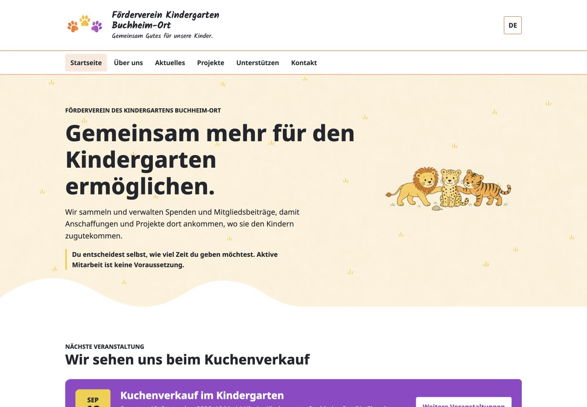
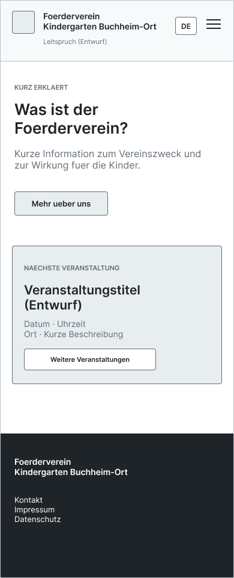
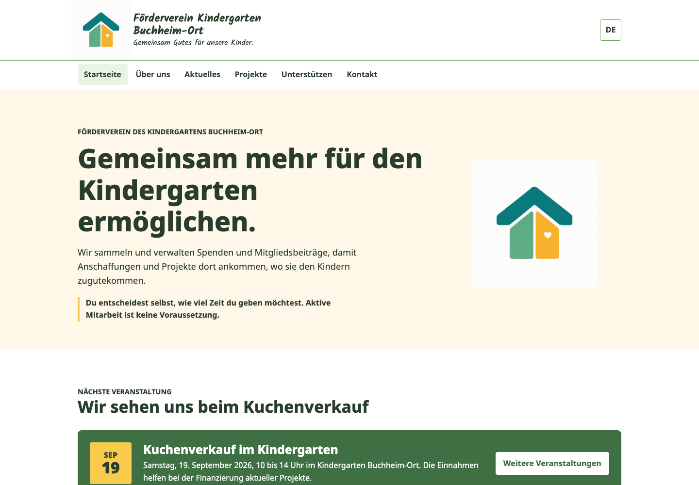
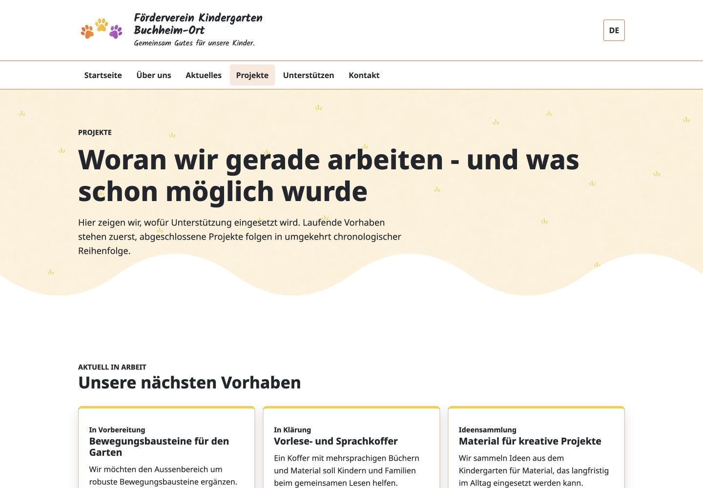
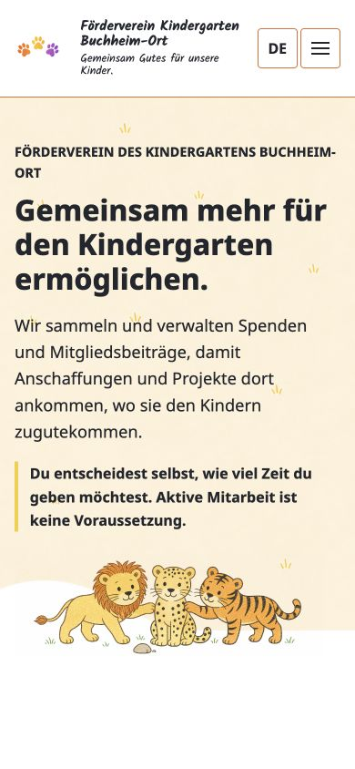

UX-Konzept · UI Design · Frontend
Förderverein
Für den neuen Förderverein habe ich eine mehrseitige Informationswebsite konzipiert und als statischen Entwurf umgesetzt.

01 · Kontext
Ausgangslage und Ziel der Website.
Der Förderverein organisiert finanzielle Unterstützung für den Kindergarten Buchheim-Ort. Die Website soll erklären, warum der Verein existiert, wie Unterstützung funktioniert und wofür Mittel eingesetzt werden.
Als Grundlage habe ich die Vereinssatzung und vorhandene Inhalte ausgewertet. Daraus entstand eine erste Struktur, die wichtige Fragen von Familien und Unterstützenden verständlich beantworten soll.
Wie können Eltern, Großeltern und Interessierte schnell verständliche Informationen finden, sodass Transparenz und Vertrauen entstehen?
02 · Ausgangspunkte & Hypothesen
Erste Bedürfnisse sammeln und als Hypothesen behandeln.
Zielgruppen-Perspektiven
Bedürfnisse von Eltern, Angehörigen, Unterstützenden und Website-Pflegenden wurden zunächst als offene Annahmen formuliert.
Fragen & Erwartungen
Für zusätzliche Perspektiven nutzte ich KI-gestützte Rollensimulationen. Die Ergebnisse behandelte ich als Hypothesen, nicht als Ersatz für Gespräche mit echten Personen.
Prioritäten für die erste Version
Verständnis des Vereins, transparente Mittelverwendung und zugängliche Inhalte erhielten für die erste Version Vorrang.
„Es kommt unseren eigenen Kindern zugute.“Grundgedanke aus dem Projektkontext
03 · Informationsarchitektur
Inhalte ordnen und wichtige Wege festhalten.
Zuerst habe ich gesammelt, welche Fragen die Website beantworten muss. Anschließend habe ich die Inhalte auf die einzelnen Seiten verteilt und vier wichtige Wege festgehalten: den Verein verstehen, die Mittelverwendung nachvollziehen, Veranstaltungen finden und Kontakt aufnehmen.
- 01Verein verstehen
- 02Wirkung nachvollziehen
- 03Termine finden
- 04Kontakt aufnehmen
04 · Mobile-first Wireframe
Die Inhaltsreihenfolge zuerst im mobilen Wireframe prüfen.
Der Wireframe-Entwurf prüfte die Inhaltsreihenfolge, bevor Farben, Bildmaterial und finale Texte hinzukamen. Die Sprachauswahl liegt im Header, rechtliche Seiten bleiben im Footer erreichbar.

05 · Überarbeitung nach Feedback
Den Entwurf nach Rückmeldung des Vorstands anpassen.
Der erste Entwurf arbeitete mit einer ruhigen Grünwelt. Nach dem Feedback des Vereinsvorstands wurde die Richtung enger an das Kindergartenlogo gekoppelt: Löwe, Gepard und Tiger prägen nun den Einstieg, ergänzt durch Orange, Gelb und dosierte bunte Akzente. Die Website sollte dadurch stärker an den Kindergarten erinnern und ein fröhliches, buntes Miteinander widerspiegeln.
Noto Sans hält längere Inhalte lesbar; Kalam setzt nur im Logo und in kurzen Akzenten eine persönliche Note. Beide Schriften werden lokal eingebunden.

Entscheidungswege
Von Erkenntnissen zu sichtbaren Änderungen.
Familien sollen schnell verstehen, warum es den Verein gibt und was er ermöglicht.
Vereinszweck und Wirkung vor organisatorischen Details erklären.
Die Startseite erklärt zuerst den Verein und zeigt danach die nächste Veranstaltung.
Der erste Entwurf wirkte dem Vorstand noch nicht fröhlich und kindergartenbezogen genug.
Die visuelle Richtung enger an Logo, Tierwelt und Farbigkeit des Kindergartens koppeln.
Löwe, Gepard und Tiger sowie Orange, Gelb und bunte Akzente prägen nun den Einstieg.
Freiwillige Mitarbeit könnte zunächst nach einer festen Verpflichtung klingen.
Die freie Wahl von Art und Umfang der Unterstützung früher erklären.
Der entlastende Hinweis steht jetzt direkt im frühen Verlauf der Startseite.
06 · Website-Entwurf
Der aktuelle Stand des Website-Entwurfs.


07 · Überprüfung & Weiterentwicklung
Den Entwurf prüfen und schrittweise verbessern.
Ein Expertenreview half mir, die wichtigsten Informationswege und die mobile Nutzung systematisch zu betrachten.
Die freiwillige Mitarbeit wird nun früher erklärt. Auch Rückmeldungen zu Navigation, Datumsdarstellung und Zugänglichkeit flossen in den Entwurf ein.
Die zentralen Seiten sind für Desktop und Mobil gestaltet; Deutsch und Englisch sind als Sprachversionen vorgesehen.
Tests mit echten Nutzer:innen sollen zeigen, ob Inhalte, Sprache und wichtige Wege verständlich genug sind.
Aktueller Stand
Die Website befindet sich noch in Entwicklung.
Konzept, Inhaltsstruktur, visuelle Richtung und responsive Seiten sind ausgearbeitet.
Als Nächstes möchte ich den Entwurf mit echten Nutzer:innen prüfen und auf Grundlage ihrer Rückmeldungen weiterentwickeln.